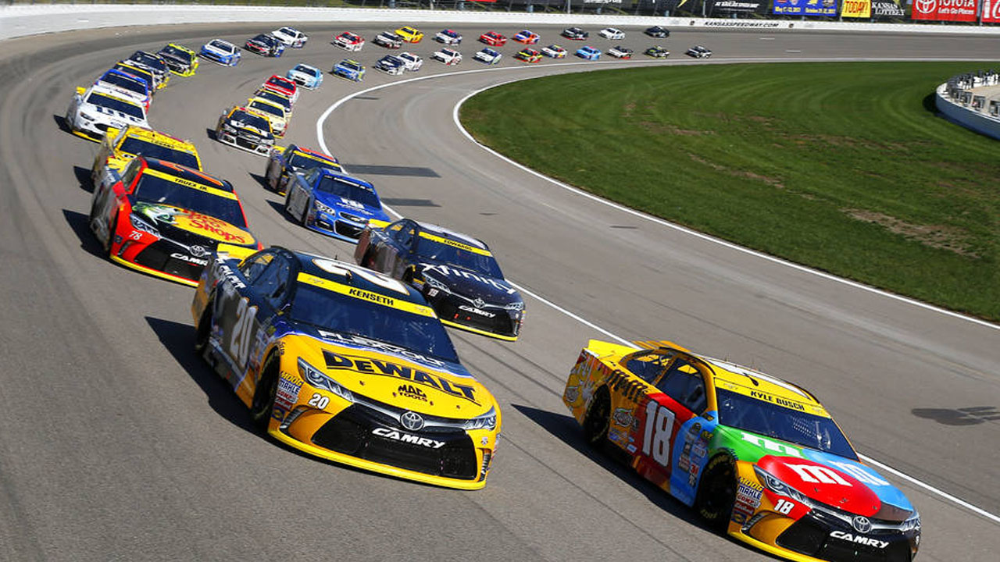

Мир гонок — это сила, скорость и стратегия. Каждая гонка — это
борьба за лидерство.
История автогонок
Автогонки зародились в конце XIX века, когда автомобили начали набирать популярность. Первая
зарегистрированная гонка состоялась в 1894 году, и с тех пор гонки стали неотъемлемой частью
развития автомобилестроения. В начале XX века гонки проводились на дорогах общего пользования, но по
мере увеличения скорости и требований к безопасности начали строиться специальные гоночные трассы.
Создание чемпионата Формулы 1 в 1950 году стало ключевым событием в автоспорте. Этот
чемпионат до сих пор считается самой престижной серией гонок, где технологии и мастерство гонщиков
достигают новых высот каждый год.
На протяжении десятилетий автогонки прошли длинный путь, начиная с обычных гонок по шоссе и
заканчивая высокотехнологичными соревнованиями, такими как Формула E и
WEC (Чемпионат мира по гонкам на выносливость).
Виды автогонок
Существуют различные виды автогонок, и каждая дисциплина имеет свои особенности. Вот некоторые из
самых популярных видов автогонок, которые отличаются по сложности, технике и зрелищности:
Формула 1: Самые быстрые и технологически продвинутые болиды в мире, где каждая
деталь машины играет важную роль. Эти гонки проходят на специально построенных трассах, где
максимальные скорости и резкие повороты требуют высочайшего мастерства.
Наскар: Это одна из самых зрелищных и популярных гоночных серий в США. Гонки
проходят на овальных трассах, где машины движутся на невероятно высокой скорости, и каждый круг
может стать решающим.

Гонки на выносливость: Гонки в которых участники преодолевают длинные дистанции на
различных типах местности, включая асфальт, грунт и горные тропы. Эти гонки требуют от спортсменов
высокой физической подготовки, стратегического мышления и умения управлять своими силами на
протяжении продолжительного времени, что делает их настоящим испытанием для выносливости и
решимости.
Ралли: Гонки по различным типам поверхностей, включая гравий, асфальт и снег. Здесь
машины и гонщики испытывают экстремальные условия, а трассы могут включать все, от горных
серпантинов до пересеченной местности. Участники ралли должны проявлять мастерство и стратегию,
чтобы успешно пройти сложные участки трассы.
Картинг: Это первая ступень для большинства профессиональных гонщиков. Картинг
предлагает быструю и маневренную гонку на небольших автомобилях, что делает его отличной площадкой
для начинающих гонщиков. Многие будущие звёзды автоспорта начинают свой путь именно в картинге,
обучаясь контролю и тактике на небольших гоночных картах.
Эндуро: Это тип гонок, который проходит на длинные дистанции по сложным трассам.
Гонщики должны преодолевать различные препятствия, включая грязь, песок и скалы. Эндуро требует от
гонщиков не только физической выносливости, но и стратегического мышления, так как важно правильно
распределить силы на протяжении гонки.
Трек-дэй: Это неформальные гонки, где участники могут испытать свои автомобили на
гоночной трассе. Трек-дэй обычно предназначены для любителей, которые хотят проверить свои навыки
вождения и производительность своих автомобилей в безопасной среде.
Современные автогонки
Современные автогонки представляют собой сочетание высших технологий, инноваций и командной работы.
Большинство гоночных серий, таких как Формула 1 и Формула E,
активно используют гибридные силовые установки, что снижает вредные выбросы и увеличивает
эффективность машин.
С переходом на электрические болиды, такие как в Формуле E, автоспорт стремится быть
экологически чистым и инновационным. Новейшие разработки в аккумуляторах и двигателях, использующих
возобновляемую энергию, открывают новые горизонты для будущего гоночных машин.
Технологии, применяемые в гонках, зачастую позже внедряются в серийное производство автомобилей, что
делает автоспорт не только зрелищем, но и драйвером развития всей автомобильной индустрии.
Легендарные трассы
Мир автогонок богат на легендарные трассы, каждая из которых имеет свою историю и уникальные
особенности:
Монако: Гран-при Монако — одно из самых известных и престижных событий в
календаре Формулы 1. Узкие улицы города делают эту трассу одной из самых сложных и опасных.
Спа-Франкоршам: Бельгийская трасса известна своими перепадами высот и быстрыми
поворотами, такими как знаменитый Eau Rouge.
Ле-Ман: Трасса "24 часа Ле-Мана" — это испытание на выносливость как для машин,
так и для гонщиков, где команда должна преодолеть более 5000 километров за сутки.
Сильверстоун: Историческая трасса в Великобритании, на которой прошло первое
Гран-при Формулы 1 в 1950 году.
Нюрбургринг
Ле-Ман
Спа-Франкоршам
Посмотрите легенарную трассу Нюрбургринг!
Грядущие события
Гран-при Японии: 22-24 октября, Сузука
Ралли Монте-Карло: 25-28 января 2025 года, Монако
24 часа Ле-Мана: 14-15 июня 2025 года, Франция
Инди 500: 25 мая 2025 года, США
Формула Е, Гран-при Рима: 13-14 апреля 2025 года, Рим, Италия
Ралли Дакар: 4-16 января 2025 года, Саудовская Аравия
Гран-при Австралии: 15-17 марта 2025 года, Мельбурн
Последние Новости
Новое правило в Формуле 1 для сезонов 2025-2026
Международная федерация автоспорта (FIA) утвердила новые технические регламенты для болидов Формулы
1, которые вступят в силу с 2025 года. Это принесет значительные изменения в аэродинамику и
гибридные силовые установки.
Ралли Монте-Карло 2025: что нас ждет?
Одно из самых ожидаемых событий раллийного сезона уже на подходе. Участники готовятся к экстремальным
условиям и сложным трассам на легендарных дорогах Монако.
Электрические автомобили в автогонках — будущее уже наступило
Гонки на электрических автомобилях, такие как Формула E, становятся все популярнее. Автопроизводители
активно инвестируют в разработку технологий для улучшения производительности электрических гоночных
машин.